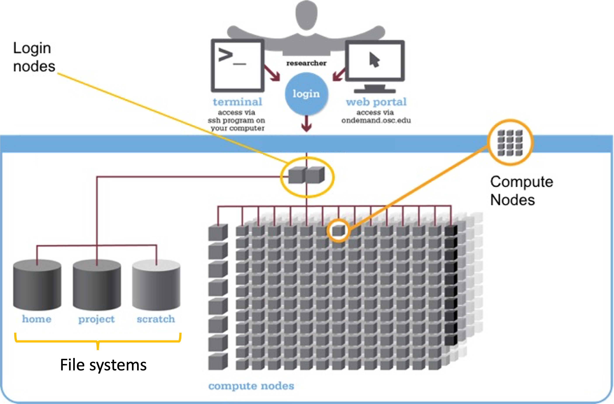
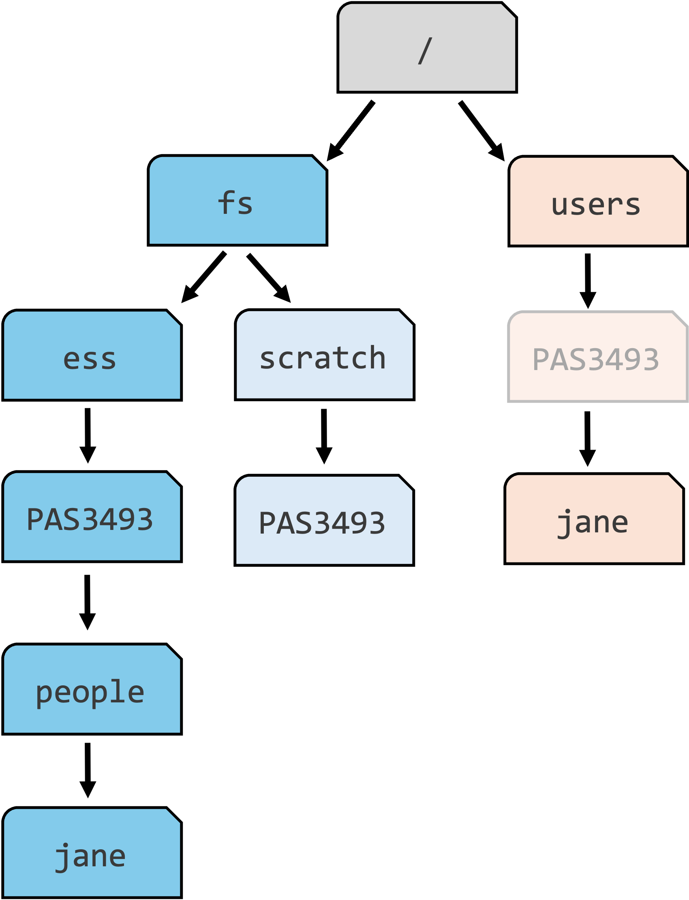
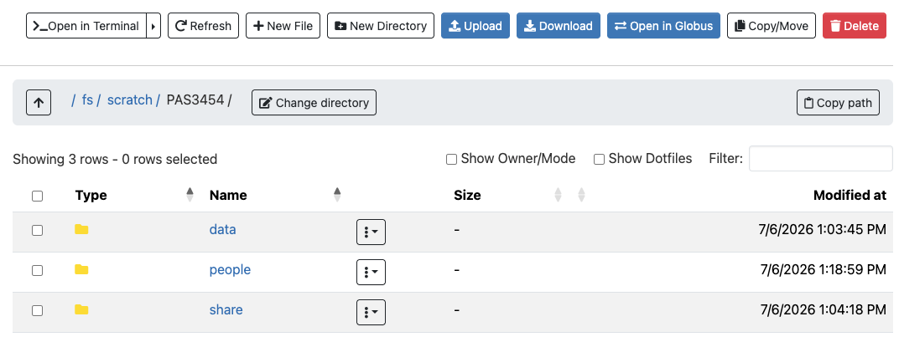
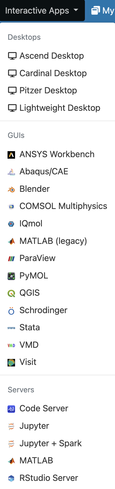
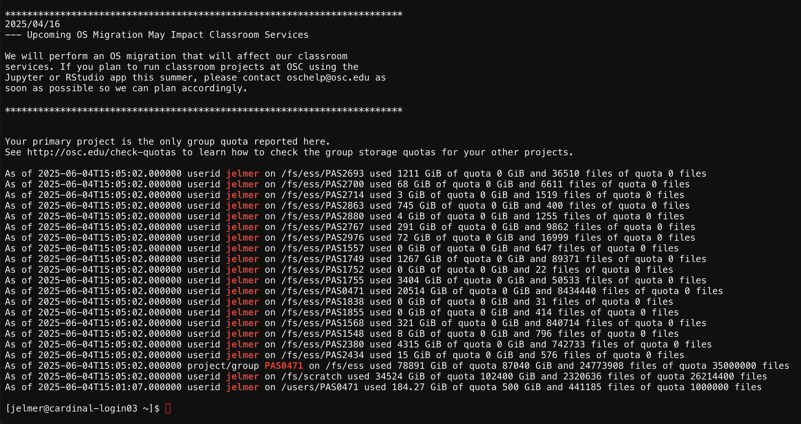

The Ohio Supercomputer Center (OSC)
Practical Computing Skills for Omics Data (PLNTPTH 5006)
Jelmer Poelstra
August 22, 2026

Introduction
Overview and learning goals
This session introduces high-performance computing and the Ohio Supercomputer Center (OSC)
- You will do all your coding and computing for this course at OSC!
- This is a brief overview to provide enough context to get you going with using OSC
- You’ll learn more along the way, and a deeper dive will follow in week 5
Overview and learning goals
You will learn:
- What supercomputers are and why they are useful
- What resources the Ohio Supercomputer Center (OSC) provides
- How to access OSC resources through its OnDemand web portal
High-performance computing
What is a supercomputer?
What is it?
- Consists of many computers connected by a high-speed network
- Can be accessed remotely by its users
What is it for? Provides High-Performance Computing (HPC) resources – two main aspects:
- Compute: computing power to run your data processing and analysis
- Storage: space for (long-term) storage of your data and results
Terminology
Supercomputers are also known as “compute clusters” or simply “clusters”
Why use a supercomputer?
Can you think of any reasons to use a supercomputer instead of your own laptop or desktop?
- Your analyses take a long time to run, need large numbers of processors, or a large amount of memory
- You need to run an analysis many times
- You need to store a lot of data
- Your analyses require Linux-only software, but you have Windows
- Your analyses require specialized hardware, such as GPUs
Tip
When you’re working with omics data, many of these reasons typically apply — this can make it hard or impossible to run all your analyses on your personal workstation, and supercomputers provide a solution.
The Ohio Supercomputer Center (OSC)
What is OSC?
- The Ohio Supercomputer Center (OSC) is a supercomputer facility provided by the state of Ohio
- Has three supercomputers, lots of storage space, and excellent infrastructure to access these resources

Cardinal, one of OSC’s supercomputers.
OSC “Projects”
Access to OSC goes through OSC “Projects”:
- OSC charges for “compute hours” and storage space, and each project has a budget for these
Projects can be tied to a lab or research project, or be educational like this course’s project
As a user, it’s possible to be a member of multiple different projects
The OSC Project for this course is PAS3493
The structure of a supercomputer center
Terminology
Going from smaller things to bigger things:
- Node
A single computer that is a part of a supercomputer - Supercomputer / Cluster
A collection of connected computers. OSC currently has three: “Ascend”, “Cardinal”, and “Pitzer” - Supercomputer Center
A facility like OSC that has one or more supercomputers
TODO - ADD DIAGRAM
Supercomputer components
Three main parts of a supercomputer:
- File Systems
Where files are stored (shared between clusters!) - Login Nodes
The handful of computers everyone shares after logging in - Compute Nodes
The many computers you can reserve to run your analyses

The structure of a supercomputer with three main components: file systems, login nodes, and compute nodes
OSC file systems
| File system | Main purpose | One for each | Location |
|---|---|---|---|
| Project | OSC’s main data storage location | Project | /fs/ess/ |
| Scratch | Additional, temporary storage | Project | /fs/scratch/ |
| General, personal files not tied to projects |
OSC file systems
| File system | Main purpose | One for each | Location |
|---|---|---|---|
| Project | OSC’s main data storage location | Project | /fs/ess/ |
| Scratch | Additional, temporary storage | Project | /fs/scratch/ |
| Home | General, personal files not tied to projects | user | /users/ |
File systems in a diagram

Key folders for fictional student jane
- The main data storage location for the course is
/fs/ess/PAS3493
The Home system
PAS3493box is faded because:- Your Home location may be elsewhere
- Despite appearances, your Home folder is not associated with any project!
Login vs. compute nodes
Login nodes are an initial landing spot when you log in to a supercomputer:
- There are only a handful of them on each supercomputer
- They are shared among everyone, and cannot be reserved for exclusive usage
Login nodes are meant only for light tasks such as organizing files and creating scripts for compute jobs, and not for serious computing.
Compute nodes are where computation, such as data analysis, takes place:
To access compute nodes, you need to request a “compute job”
A job scheduler program then assigns the requested resources – for example, access to a specific compute node for two hours
OSC OnDemand
OSC websites
OSC has three main websites:
| Website | Purpose | Login? |
|---|---|---|
| https://ondemand.osc.edu | Web portal where you can use OSC resources from within your browser | Yes |
| https://my.osc.edu | Account and project management | Yes |
| https://osc.edu | General website with information about the supercomputers, installed software, and usage | No |
OSC OnDemand
OSC OnDemand offers access to, for example:
- A file browser/explorer
- A Unix shell
- “Interactive Apps”: programs such as RStudio and VS Code
Let’s log in
Go to https://ondemand.osc.edu and log in — then, you should see:

The OSC OnDemand landing page
Do not go to class.osc.edu!
Files menu
In the dropdown menus in the blue navigation bar along the top, hover over the Files dropdown menu.
This gives a list of folders that you have access to. If your account is brand new, and you were added to PAS3493, you should only see three folders listed:
- A Home folder (starts with
/users/) - The
PAS3493project’s “project” folder (/fs/ess/PAS3493) - The
PAS3493project’s “scratch” folder (/fs/scratch/PAS3493)
TODO ADD SCREENSHOT
Recall: you will only ever have one Home folder at OSC, but for every additional project you are a member of, additional /fs/ess and /fs/scratch folders usually appear.
Files menu (cont.)
Click on /fs/ess/PAS3493 to see the folders and files present there:

This interface is much like the file browser on your own computer: you can create, delete, move and copy files and folders, and even upload and download files.
Create a personal folder
- Click on the
peoplefolder - Click the “New Directory” at the top (directory, or “dir” for short, is another word for folder)
- Give the new folder the exact same name as your OSC username (you can see your username in the top-right corner of the OnDemand webpage)
- Click on the new folder and within it, create two more folders:
- one called
week02 - one called
week03
- one called
This folder will be where you’ll store all your files for this course!
Interactive Apps menu
You can access programs with Graphical User Interfaces (GUIs; point-and-click interfaces) via the Interactive Apps dropdown menu:
- Next week, you’ll start using the VS Code text editor, listed here as
Code Server, to write Markdown files and work in the Unix shell TODO - UPDATE AS NEEDED
- You’ll also use
RStudio Serverto code in R

Direct Unix shell access
In the Clusters dropdown menu, you can also access a Unix shell directly on any of the clusters.

During the course, you will instead access a Unix shell via the Code Server Interactive App — but this method can occasionally be useful as a more rapid access point.
Recap
Recap: OSC
- A supercomputer provides shared compute and storage resources, accessed remotely
- OSC access is organized through Projects (ours:
PAS3493) - A supercomputer has file systems, login nodes, and compute nodes
- OSC OnDemand (https://ondemand.osc.edu) is how you’ll access all of this: files, a Unix shell, and Interactive Apps like Code Server and RStudio Server